От требований
к плану работ
в Битрикс24
Разберём неудачный план и создадим задачи с результатами, ответственными и понятным порядком выполнения.
- Где работаем
- Существующий проект «СЕВЕР»
- Основание
- Требования версии 2 из темы 3
- Результат
- План будущих работ
Что получится за пару
Правила резервирования согласованы. Теперь команде нужно понять, какие работы выполнить, кому их поручить и какой результат получить от каждого участника.
Мы составим небольшой план внутри существующего проекта «СЕВЕР». В нём будут общая задача с двумя подзадачами и три отдельные задачи. Все шесть карточек описывают будущую работу над магазином. На этой паре мы создаём план. Реализация и проверка программы остаются будущими работами.
В готовом плане видно:
- какой результат ожидается от каждой работы;
- кто отвечает за этот результат;
- какие требования указаны в работе;
- что можно начать сразу и какой результат нужен для продолжения;
- где запланирована проверка совместной работы частей.
Начнём с черновика команды и найдём работы, которые в нём потерялись.
1. Найдите пропуски в черновом плане
Чтобы оценить черновой план, сопоставим его с требованиями из темы 3. Используем согласованные условия без новых вопросов заказчику и пересмотра требований.
Работаем с уже согласованной версией 2:
| Требование | Согласованное поведение |
|---|---|
| R1 | Корзина не создаёт резерв. При подтверждении оформления проверка остатка и создание резерва выполняются одной неделимой операцией. |
| R2 | При доступном количестве 1 успешный резерв получает только один заказ. Если товар недоступен, другой заказ не подтверждается. Показано «Товар временно недоступен». |
| R3 | Неоплаченный резерв действует 20 минут с момента создания. Условие применяется к новым заказам. |
| R4 | Отмена неоплаченного заказа или окончание срока без подтверждения оплаты освобождает резерв. |
| R5 | Подтверждение оплаты до окончания резерва закрепляет товар за заказом. Истечение прежнего срока не возвращает его в продажу. |
P1–P5 — сценарии из темы 3: резерв при оформлении, второй покупатель, истечение срока, отмена и оплата. Сценарий задаёт исходное состояние, действие и ожидаемый результат. Здесь используем уже подготовленные тексты.
Границы сохраняются: один рюкзак, количество 1. Поздняя оплата, возврат оплаченного товара, частичное выполнение заказа и переход уже созданных резервов на новый срок не входят в работу.
Проверьте R3 в описании существующей задачи «Подготовить проверки последнего товара»: там должно быть 20 минут для новых заказов. Старые сообщения о 15 минутах сохраняют историю. Их не нужно удалять или исправлять.
Команда набросала три работы:
| Черновая работа | Предложенный порядок |
|---|---|
| Сделать резервирование | Сначала |
| Сделать красивую страницу | После резервирования |
| Всё проверить | После страницы |
Разберите черновик в паре. Назовите результат, который можно предъявить по каждой строке. Проверьте, где запланированы отмена, истечение срока и подтверждение оплаты. Определите, нужна ли готовая страница для описания тестовых данных.
Пока достаточно назвать найденные проблемы. Отдельный теоретический отчёт не нужен. Дальше исправим план непосредственно в Битрикс24.
С чем сравнить свой разбор
«Сделать резервирование» объединяет несколько результатов, которые можно поручить и проверить отдельно. «Красивая страница» не объясняет, какое поведение должен увидеть покупатель. В строке «Всё проверить» отсутствуют условия и основание проверки. В плане не видно подготовки тестовых данных и защиты оплаченного товара от ошибочного освобождения.
Ожидание готовой реализации оправдано для сквозного прогона программы. Оно не требуется для подготовки перечня данных по уже согласованным P1–P5. Последовательность из трёх строк смешивает эти разные виды работы.
Теперь выделим результаты этих работ и распределим их по отдельным карточкам.
2. Выделите проверяемые результаты
В строке «Сделать резервирование» смешаны создание резерва и обработка его дальнейшего состояния. Разделим их на работы с отдельными результатами. Такое разделение большой работы называют декомпозицией. Границу проводим по результату, который можно принять отдельно.
Рассмотрим будущую реализацию резервирования. Проверка остатка и создание резерва должны работать вместе: это следует из R1 и R2. Их оставим одним результатом, поскольку раздельное выполнение нарушило бы R1. Освобождение резерва и обработка оплаты образуют второй результат: здесь нужно согласовать R3–R5, чтобы оплаченный товар не вернулся в продажу.
Создадим общую задачу и две подзадачи. Подзадача — отдельная карточка работы, включённая в более крупную задачу. В ней есть собственный результат и ответственный. Общая задача объединит результаты, но не заменит их проверку.
Ещё три работы оставим самостоятельными задачами проекта: интерфейс покупателя, подготовку данных и сквозную проверку. Сквозная проверка — прогон сценариев через все связанные части магазина. Эти работы охватывают несколько результатов, поэтому выделим для них отдельные карточки.
Покажем группировку карточек и ответственность за каждую работу. Внутри общей задачи находятся только А1 и А2.
Подготовить резервирование последнего рюкзака
Создание резерва
Срок, отмена и оплата
Интерфейс покупателя
Данные для проверки
Сквозная проверка
Рамка А показывает состав общей задачи. Вложенность не задаёт порядок выполнения. Человечки обозначают ответственность за карточки; одному участнику можно назначить несколько карточек.
У А1 и А2 собственные ответственные и результаты. Б, В и Г остаются рядом как самостоятельные задачи проекта. В таблице сопоставим эту структуру с результатом каждой карточки.
| Метка в этой практике | Название | Вид | Будущий результат |
|---|---|---|---|
| А | Подготовить резервирование последнего рюкзака | Общая задача | Создание резерва и обработка его состояний согласованы между собой. |
| А1 | Создать резерв при подтверждении оформления | Подзадача А | Только один заказ получает последний рюкзак; корзина не резервирует товар. |
| А2 | Обработать срок, отмену и оплату резерва | Подзадача А | Неоплаченный резерв освобождается, оплаченный товар остаётся за заказом. |
| Б | Показать покупателю результат оформления | Отдельная задача | Покупатель видит подтверждение своего заказа либо согласованное сообщение об отказе. |
| В | Подготовить данные для проверки резервирования | Отдельная задача | Для независимого запуска сценариев определены исходные данные и способ восстановления состояния. |
| Г | Выполнить сквозную проверку резервирования | Отдельная задача | По каждому сценарию записан фактический результат или причина блокировки. |
Метки А, А1, А2, Б, В и Г нужны только для объяснения плана. Это не номера карточек Битрикс24. В связях используйте фактические ссылки на созданные задачи.
Критерии приёмки — условия, по которым принимают готовый результат. Например, для А2 нужно проверить, что подтверждённая оплата сохраняет товар за заказом. Запишем такие условия в новых карточках.
3. Создайте общую задачу и подзадачи
Новые работы создаём в том же проекте «СЕВЕР — запуск интернет-магазина». Старые карточки о правилах, составе товара и подготовке проверок сохраняем. Они содержат результаты предыдущих пар и не становятся заготовками для новых задач.
- Откройте существующий проект.
В левом меню выберите «Проекты», затем «СЕВЕР — запуск интернет-магазина». Не создавайте второй проект и не редактируйте старые карточки.
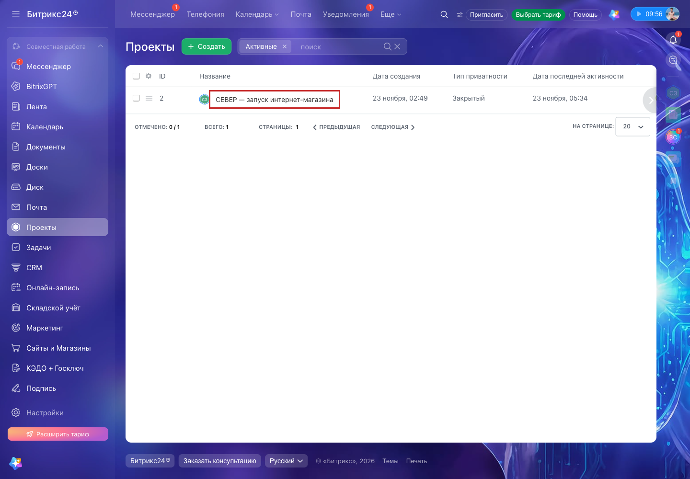
Проект «СЕВЕР» в списке - Перейдите к задачам.
В карточке проекта нажмите «Задачи».
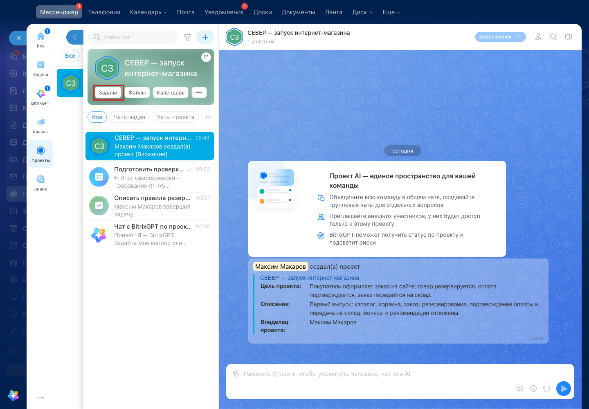
Кнопка «Задачи» проекта
Сначала скопируйте ссылку на источник требований. Откройте существующую задачу «Подготовить проверки последнего товара» из темы 3. Слева нажмите кнопку с изображением цепочки «Скопировать ссылку». Сохраните ссылку: она понадобится в описаниях новых карточек. Содержимое старой задачи оставьте без изменений.
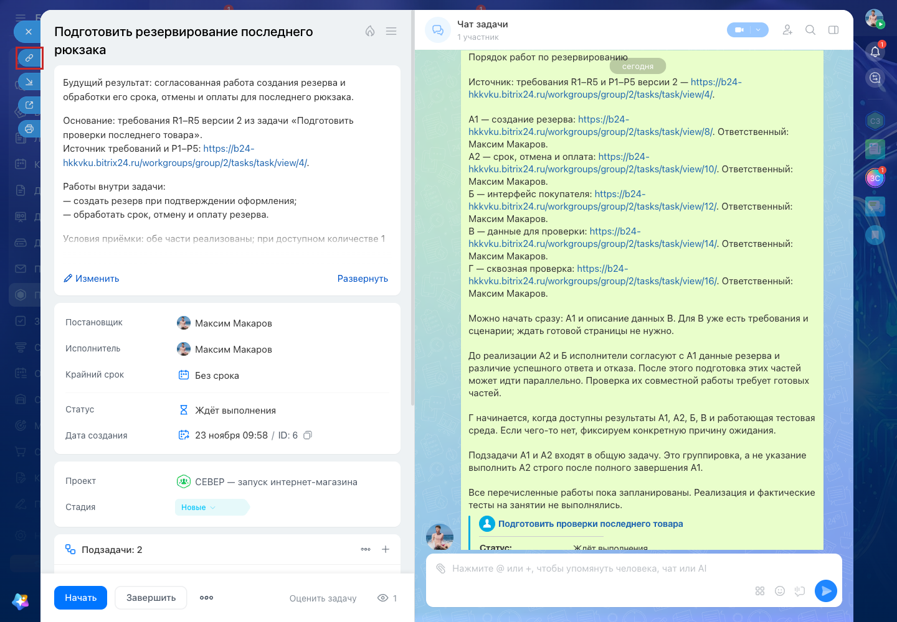
Общая задача А
Подготовьте название и описание общей задачи А. Затем создайте её по маршруту под текстом.
Название:
Подготовить резервирование последнего рюкзака
Описание:
Будущий результат: согласованная работа создания резерва и обработки его срока, отмены и оплаты для последнего рюкзака. Основание: требования R1–R5 версии 2 из задачи «Подготовить проверки последнего товара». Источник требований и P1–P5: [ссылка на существующую задачу из темы 3]. Работы внутри задачи: — создать резерв при подтверждении оформления; — обработать срок, отмену и оплату резерва. Условия приёмки: обе части реализованы; при доступном количестве 1 резерв получает только один заказ. Новый неоплаченный резерв действует 20 минут. Отмена и окончание срока освобождают неоплаченный резерв, но не возвращают в продажу оплаченный товар. Для общего результата нужны также интерфейс покупателя и сквозная проверка. Они планируются отдельными задачами проекта. Границы: один рюкзак, количество 1. Поздняя оплата, возврат оплаченного товара, частичное выполнение заказа и переход уже созданных резервов на новый срок не входят в работу. Статус на занятии: составляем план будущей работы. Реализация и тестирование программы не выполнены.
Замените текст в квадратных скобках сохранённой ссылкой на задачу темы 3. Ответственного выберите из доступных участников проекта. Если работаете в собственном портале без команды, назначьте себя.
- Начните новую задачу.
Закройте карточку источника требований крестиком слева сверху. В списке проекта нажмите «Создать». Откроется короткая форма.
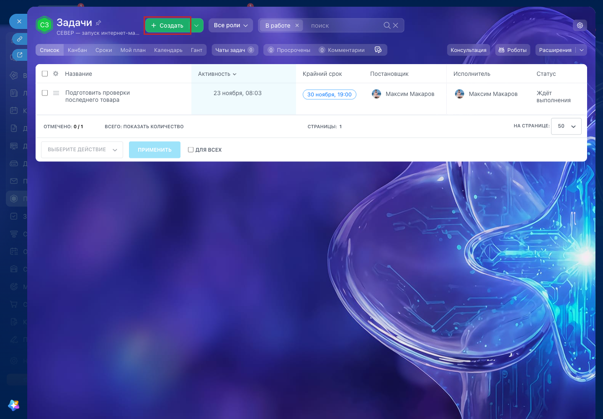
Создание новой задачи - Заполните название и описание А.
В поле «Название задачи» вставьте название из блока выше. Нажмите «Описание» и вставьте полный текст описания. Замените вставку в квадратных скобках ссылкой на свою задачу темы 3; не используйте ссылку с кадра. В длинном описании форма может показывать только последние строки — это не повод сокращать текст.
На кадре показаны пустые поля до ввода названия и описания.
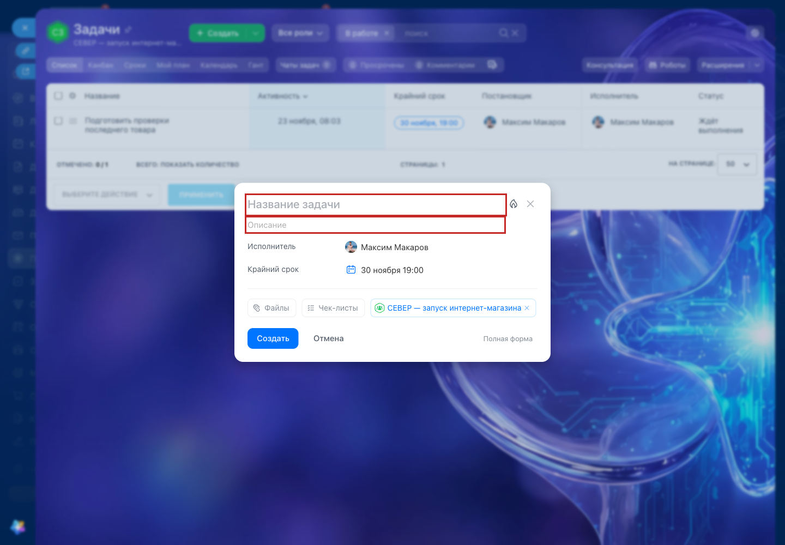
Поля новой задачи - Выберите исполнителя.
Нажмите имя в строке «Исполнитель». В тексте практики это ответственный за результат задачи.
Поле исполнителя задачи - Подтвердите участника.
В списке выберите доступного участника проекта. В личном портале оставьте себя; приглашать людей не требуется. Закройте список щелчком вне него.
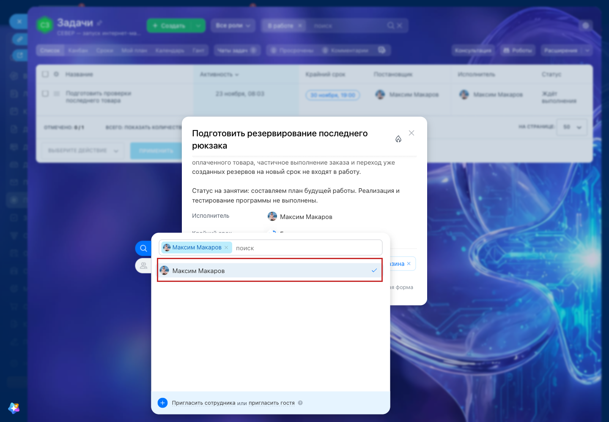
Список выбора исполнителя - Уберите случайный срок и сохраните А.
Если форма подставила крайний срок, наведите на дату и нажмите крестик справа от неё: должно появиться «Без срока». Убедитесь, что внизу выбран проект «СЕВЕР», затем нажмите «Создать». Подробное календарное планирование в эту работу не входит.
Сохранение общей задачи - Убедитесь, что карточка появилась.
При необходимости обновите страницу клавишей F5. Найдите новую общую задачу в списке и откройте её. Исчезновение формы само по себе ещё не подтверждает сохранение.
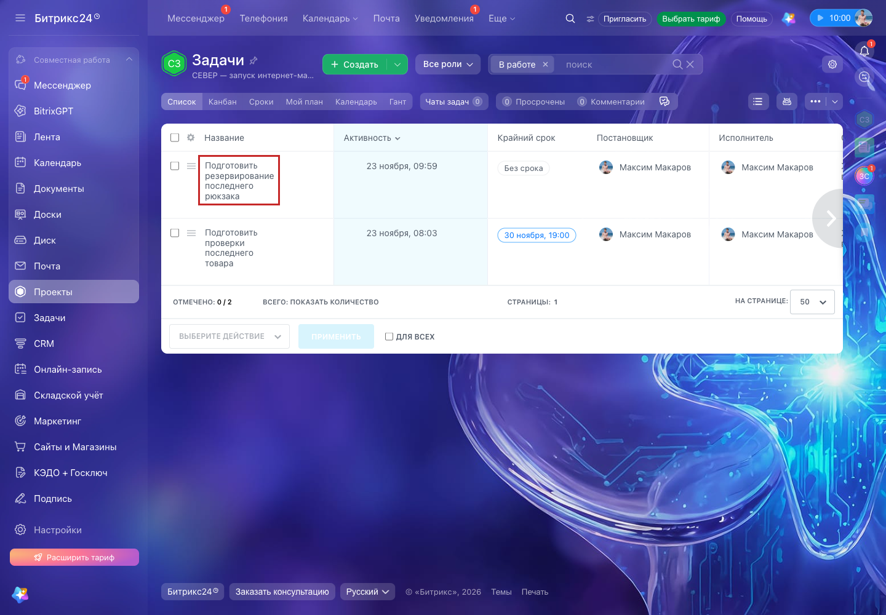
Общая задача в списке
Подзадача А1
Общая задача сохранена. Теперь добавим в неё А1 — работу по созданию резерва. Подготовьте текст и откройте форму подзадачи по маршруту под ним.
Название:
Создать резерв при подтверждении оформления
Описание:
Будущий результат: при подтверждении оформления система проверяет доступный остаток и создаёт резерв одной неделимой операцией. Корзина сама резерв не создаёт. Требования: R1, R2 версии 2. Источник: [ссылка на задачу темы 3]. Условия приёмки: — при добавлении единственного рюкзака в корзину резерв не создаётся; — при подтверждении оформления создаётся один резерв, доступный остаток становится 0; — два одновременных оформления при остатке 1 не создают два успешных резерва; — при недоступном товаре другой заказ не подтверждается. Передача результата: описаны данные, по которым обработка оплаты и интерфейс отличают успешный резерв от отказа. Эти сведения согласуются с исполнителями связанных задач до их реализации. Связанные проверки: P1, P2 и дополнительный сценарий одновременного оформления из темы 3. Их прогон запланирован отдельно. Работа относится к общей задаче о резервировании. Заполнение карточки не означает, что резервирование реализовано.
- Откройте действия общей задачи.
В открытой А нажмите кнопку меню справа от названия. При наведении это «Действия с задачей».
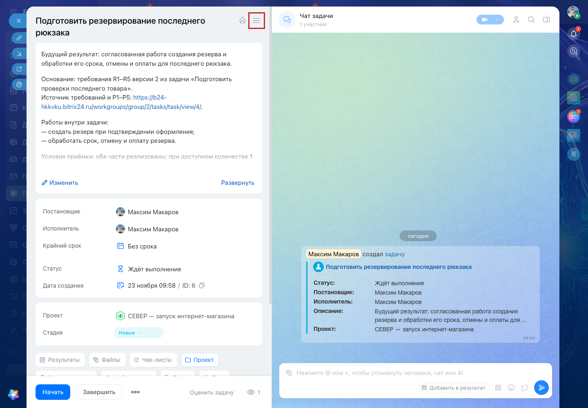
Меню действий общей задачи - Выберите «Создать подзадачу».
В меню нажмите «Создать подзадачу». Не выбирайте копирование задачи: оно не заменяет создание дочерней карточки.
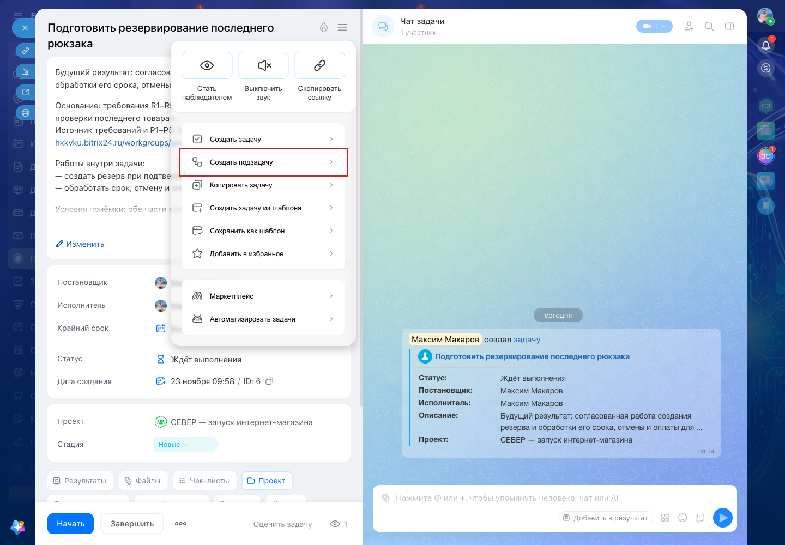
Пункт создания подзадачи - Заполните А1.
Вставьте название и полное описание А1 из блока выше. Замените ссылку на требования, выберите исполнителя так же, как в общей задаче.
В форме видна нижняя часть описания. Прокрутите поле и проверьте полный текст А1.
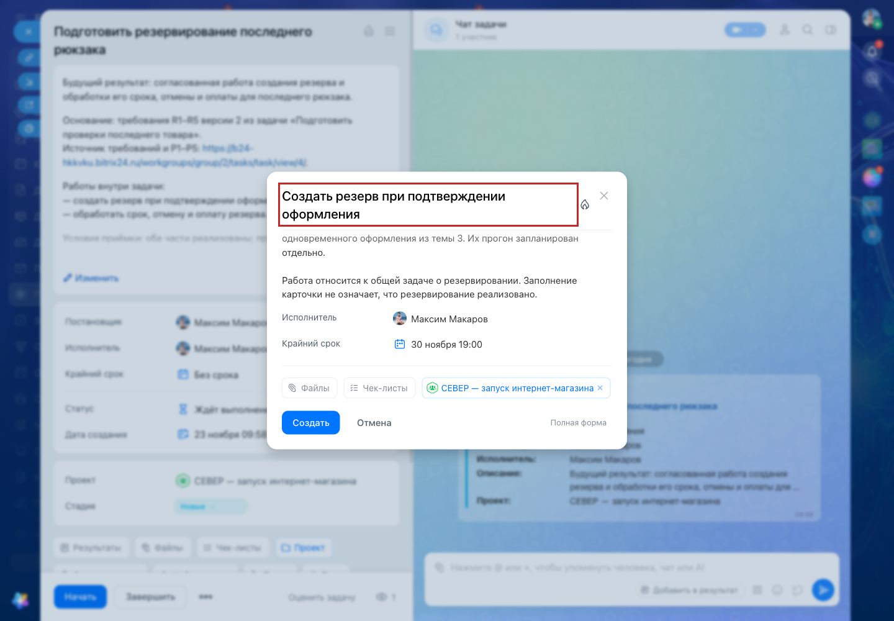
Заполненная подзадача А1 - Очистите подставленный срок.
Наведите указатель на дату в строке «Крайний срок» и нажмите крестик справа. Если уже показано «Без срока», ничего менять не нужно.
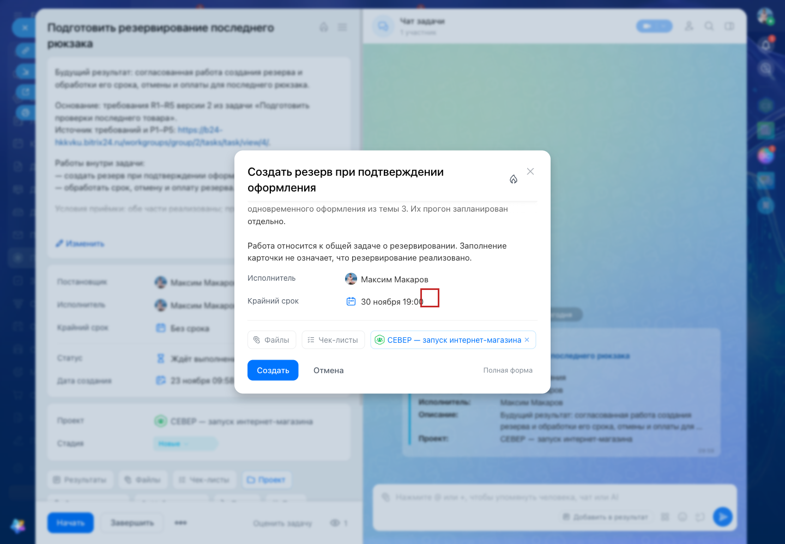
Удаление крайнего срока - Сохраните А1.
Проверьте исполнителя и проект, нажмите «Создать».
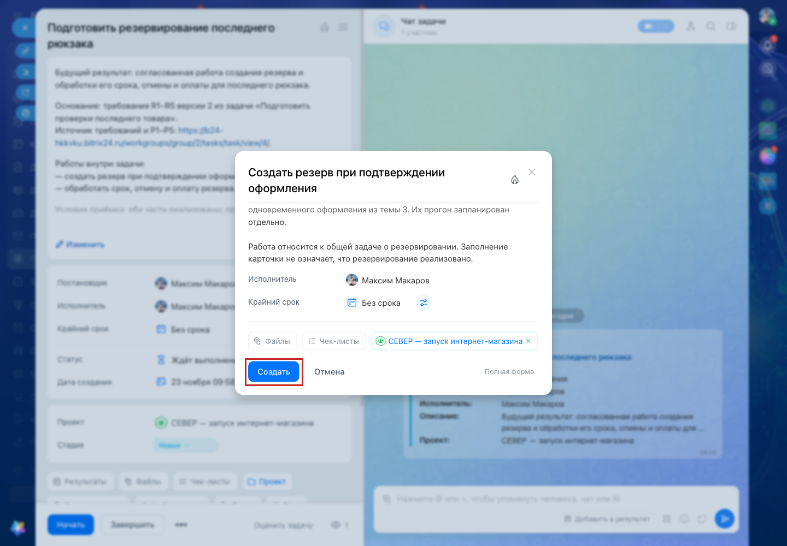
Сохранение подзадачи А1 - Проверьте настоящую связь.
В общей задаче найдите раздел «Подзадачи». В нём должна появиться А1. Одинаковые названия или текстовая ссылка вместо этой связи не подходят.
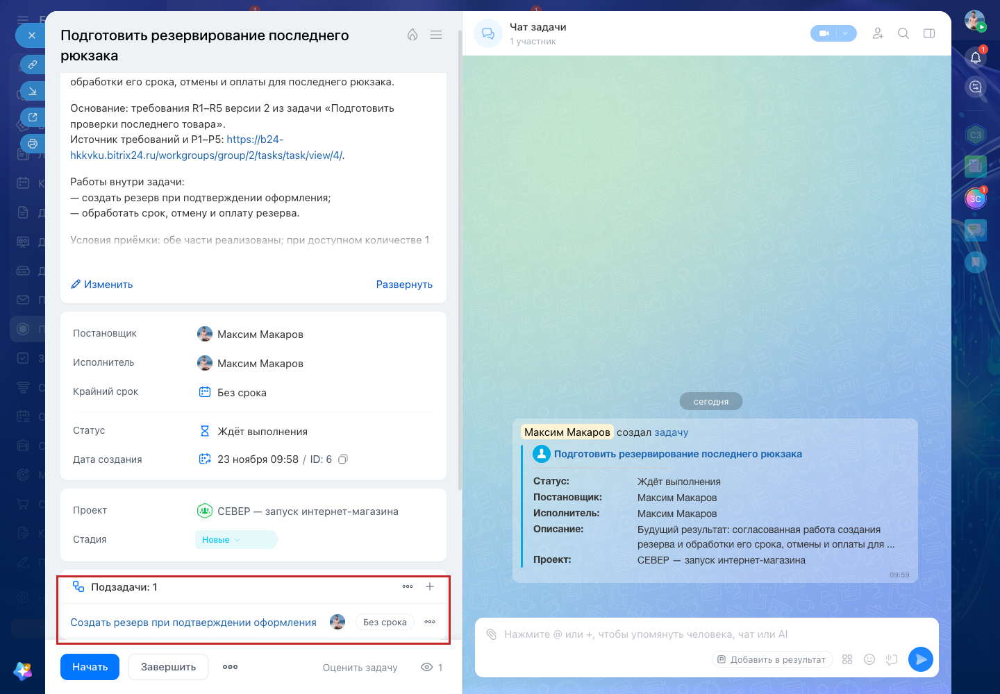
Раздел подзадач общей задачи
Подзадача А2
Вторая подзадача описывает изменения состояния уже созданного резерва. Подготовьте текст А2, затем создайте её внутри той же общей задачи А.
Название:
Обработать срок, отмену и оплату резерва
Описание:
Будущий результат: состояния резерва меняются по согласованным правилам срока, отмены и подтверждения оплаты. Требования: R3, R4, R5 версии 2. Источник: [ссылка на задачу темы 3]. Условия приёмки: — новый неоплаченный резерв действует 20 минут с момента создания; — через 16 минут без оплаты и отмены резерв ещё действует; — через 21 минуту без оплаты резерв снят, товар снова доступен; — отмена неоплаченного заказа до окончания срока освобождает резерв; — оплата, подтверждённая до окончания срока, закрепляет товар за заказом; — наступление прежнего срока окончания не освобождает оплаченный товар. Для реализации нужны данные создаваемого резерва: его связь с заказом, время создания и состояние. Сначала согласовать их с исполнителем подзадачи о создании резерва. Проверка совместной работы возможна после появления обеих частей. Связанные проверки: P3, P4, P5 версии 2. Здесь планируется реализация, а не повторное написание сценариев. Границы: поздняя оплата и переход уже созданных резервов на новый срок не входят в работу.
Вернитесь к общей задаче А. Повторите «Действия с задачей» → «Создать подзадачу». Вставьте название и описание А2 из блока выше, замените ссылку на требования. Выберите исполнителя, оставьте «Без срока» и нажмите «Создать».
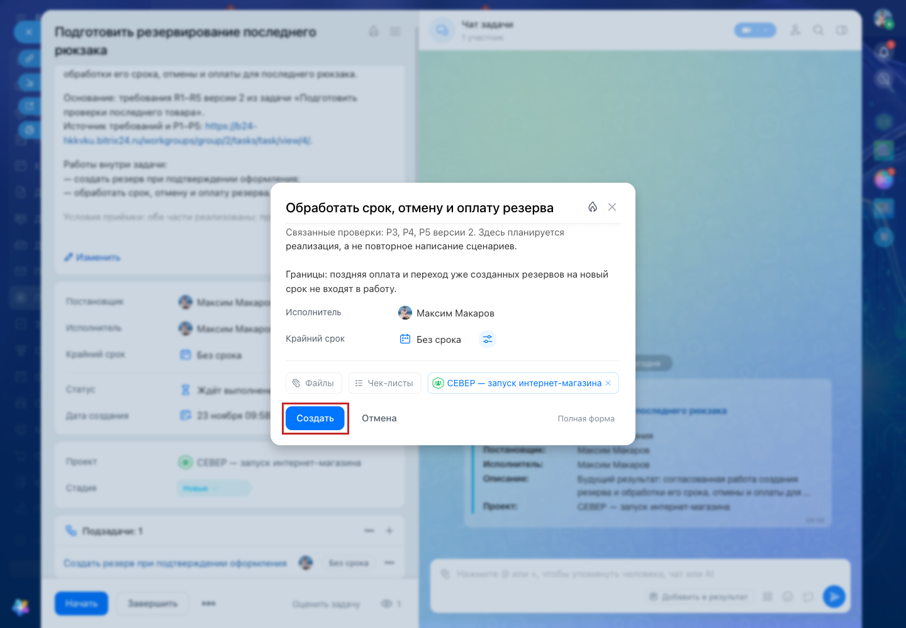
После сохранения обеих подзадач проверьте их принадлежность общей задаче. Совпадение названий и префиксов не заменяет связь подзадачи в интерфейсе.
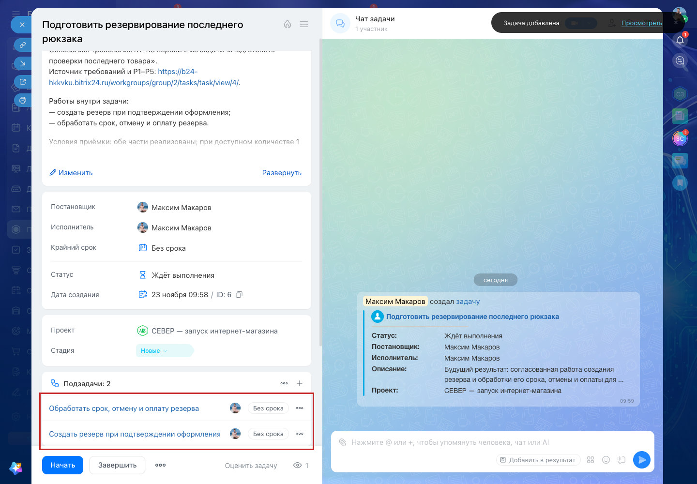
Связь двух подзадач сохранена. Теперь добавим интерфейс, подготовку данных и сквозную проверку как самостоятельные работы проекта.
4. Добавьте самостоятельные работы и чек-лист
Описание данных для проверки включает товар, покупателей и исходные состояния сценариев. Эти пункты можно собрать в одной задаче и поручить одному исполнителю. Чек-лист — перечень проверяемых пунктов внутри такой задачи. Он помогает проверить полноту её результата. Самостоятельную работу со своим результатом или условиями начала оформляем отдельной задачей.
Для А1 и А2 мы выбрали подзадачи: их результаты различаются и передаются между исполнителями. Для подготовки данных используем чек-лист: один исполнитель собирает единый набор условий для проверки.
Сравним, что передают исполнители А1 и А2 и что собирает ответственный за В.
Отдельные результаты
Создать резерв
Обработать состояния
Единое описание данных
- Товар и два покупателя
- Исходные состояния P1–P5
- Моменты наблюдения
- Одновременные оформления
- Восстановление состояния
- Ограничения среды
Флажки показаны пустыми: работа только запланирована. В подзадачах можно выбрать разных исполнителей. В задаче В один ответственный готовит единое описание данных.
А1 и А2 принимаем по отдельности, поэтому у них свои карточки. У В проверяем полноту одного описания по шести пунктам. Сначала создадим самостоятельную задачу Б, затем В с чек-листом и задачу Г.
Задача Б: интерфейс
Для Б используем самостоятельную задачу: её результат — сообщение покупателю по ответу операции А1. Подготовьте название и описание.
Название:
Показать покупателю результат оформления
Описание:
Будущий результат: покупатель различает успешное оформление и отказ из-за недоступности товара. Требование: R2. Связанное основание: R1. Источник: [ссылка на задачу темы 3]. Условия приёмки: — при успешном оформлении показано подтверждение заказа; — если доступного товара нет, показано «Товар временно недоступен»; — отказ не показан как успешный заказ; — вывод соответствует фактическому ответу операции создания резерва. Порядок: варианты отображения и обработку ответов можно готовить параллельно с созданием резерва после согласования формата его результата. Совместную работу проверять после готовности операции создания резерва. Зависимость: [ссылка на А1]. Проверки поведения: P1 и P2. Фактический сквозной прогон запланирован в отдельной задаче.
Закройте карточку общей задачи крестиком слева сверху. В списке задач проекта нажмите «Создать», как при создании А. Создавайте Б из списка проекта, чтобы сохранить её самостоятельной задачей.
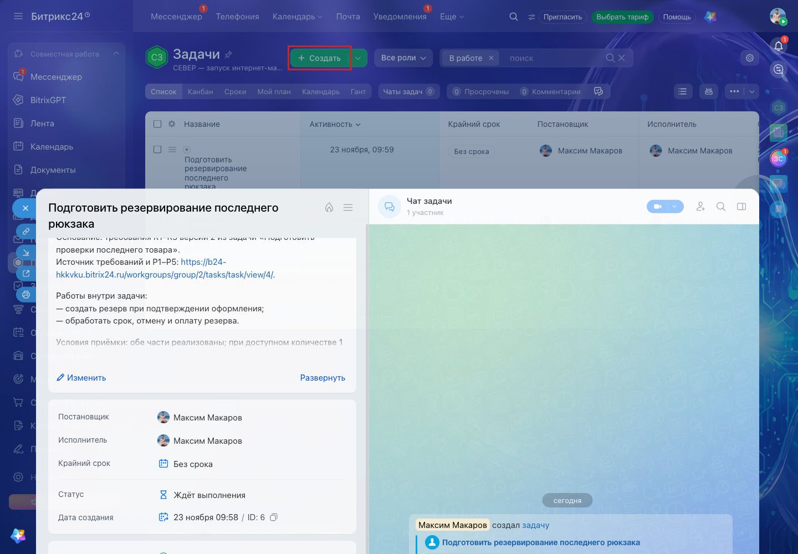
Вставьте название и описание Б из блока выше. Замените ссылки на свои, выберите исполнителя и уберите автоматически подставленный крайний срок. Нажмите «Создать».
Задача В: данные
Для будущего прогона нужно определить исходные данные каждого сценария. Подготовьте название, описание В и шесть пунктов чек-листа.
Название:
Подготовить данные для проверки резервирования
Описание:
Будущий результат: подготовлено описание тестовых данных и порядка восстановления исходного состояния для независимого прогона P1–P5 версии 2 и дополнительного сценария одновременного оформления. Источник сценариев и требований: [ссылка на задачу темы 3]. Нужно определить один товар с доступным количеством 1, двух покупателей, отдельные заказы и начальное состояние каждого сценария. Указать, как воспроизвести моменты 5, 10, 16 и 21 минута в будущей тестовой среде. Для одновременного оформления определить способ отправить два конкурирующих запроса и подсчитать успешные резервы. Условия приёмки: для каждого сценария известно, что подготовить до запуска и как восстановить состояние перед следующим. Моменты времени отсчитываются от создания резерва конкретного сценария. Данные одного прогона не переходят в другой. Работу над описанием данных можно начать сразу по согласованным сценариям. Создание самих данных и настройка управления временем потребуют будущей тестовой среды; её отсутствие нужно явно отметить, а не изображать готовый прогон. На занятии создаём только план этой работы. Подготовленный ранее текст P1–P5 сохраняем и не переписываем.
Пункты чек-листа задачи В, каждый — отдельным пунктом:
Описать товар с доступным количеством 1 и двух покупателей Определить отдельное исходное состояние для каждого P1–P5 Указать способ наблюдать состояния на 5, 10, 16 и 21 минуте Определить способ проверить два одновременных оформления Указать восстановление исходного состояния перед каждым сценарием Отметить, что нельзя подготовить без будущей тестовой среды
Пункты оставьте неотмеченными: исполнитель выполнит эти действия при подготовке данных.
Из списка проекта снова нажмите «Создать». Вставьте название и описание В из блоков выше, замените ссылку на тему 3. Назначьте исполнителя и оставьте «Без срока». Перед сохранением задачи добавьте чек-лист.
- Откройте чек-листы в форме В.
Под описанием и исполнителем нажмите «Чек-листы». Саму задачу пока не сохраняйте.
Редактор чек-листа задачи - Назовите чек-лист.
Нажмите «Чек-лист 1» и введите «Подготовка независимых прогонов». Название редактируется после щелчка по нему.
На кадре поле ещё содержит исходное название чек-листа.
Поле названия чек-листа - Добавьте первый пункт.
Нажмите «Добавить пункт» и введите первую строку из списка выше. Это действие добавляет поле; название чек-листа и пункт — разные поля.
Кнопка добавления пункта - Введите остальные пункты.
Для каждой следующей строки снова нажимайте «Добавить пункт». Каждую строку сохраните отдельным пунктом. Всего должно получиться шесть пунктов. Флажки слева не нажимайте.
Первый пункт чек-листа - Сохраните чек-лист.
После шестого пункта нажмите «Сохранить» в правом нижнем углу редактора. Основная форма задачи после этого останется открытой.
Первый пункт скрыт прокруткой. После открытия сохранённой карточки проверьте все шесть пунктов.
Сохранение чек-листа - Отдельно создайте задачу В.
В основной форме проверьте счётчик «Чек-лист: 0/6», исполнителя, проект и отсутствие срока. Нажмите «Создать».
Сохранение задачи с чек-листом - Проверьте сохранённый список.
Обновите список задач и откройте В. В чек-листе должны остаться все шесть пунктов и ни одной отметки. Не нажимайте «Завершить».
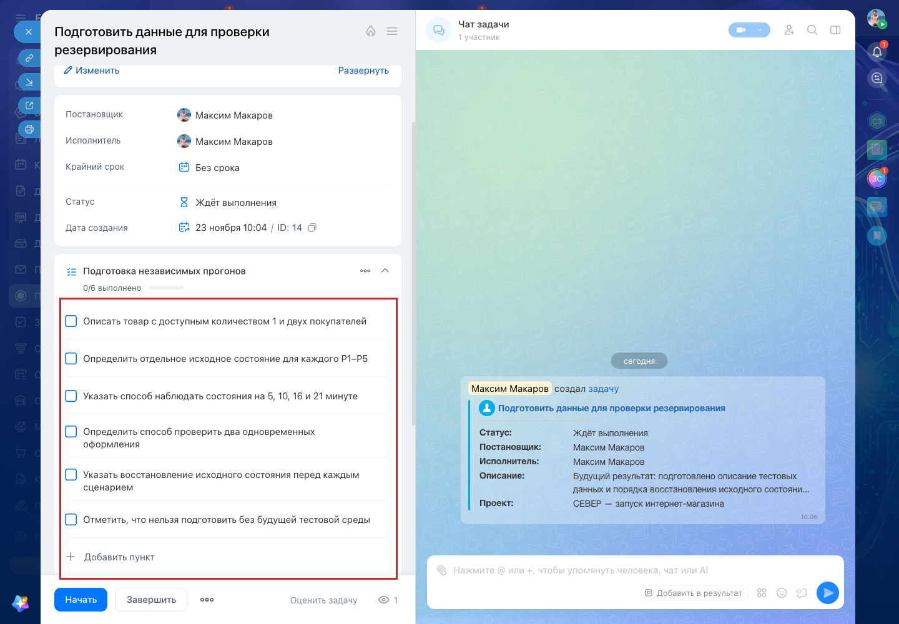
Сохранённый чек-лист задачи
Задача Г: сквозная проверка
В плане уже есть создание резерва, обработка его состояний, интерфейс и подготовка данных. Задача Г объединит их результаты в будущем сквозном прогоне — проверке совместной работы всех частей. Подготовьте её название и описание.
Название:
Выполнить сквозную проверку резервирования
Описание:
Будущий результат: протокол фактического прогона P1–P5 версии 2 и дополнительного сценария одновременного оформления на работающей тестовой версии магазина. Покрытие: R1–R5 версии 2. Источник требований и сценариев: [ссылка на задачу темы 3]. Условия начала прогона: доступны создание резерва, обработка срока/отмены/оплаты, интерфейс покупателя и подготовленные данные. Проверяем именно их совместную работу. Входные результаты: — [ссылка на А1]; — [ссылка на А2]; — [ссылка на Б]; — [ссылка на В]. Условия приёмки: для каждого сценария указаны исходные данные, действие, ожидаемый и фактический результат. При расхождении сохранены шаги воспроизведения. Если сценарий нельзя запустить, записана причина блокировки; он не считается успешным. Особое внимание: через 16 минут неоплаченный резерв действует; через 21 минуту без оплаты снят; после оплаты на 10-й минуте товар не возвращается в продажу на 21-й минуте. Каждый сценарий начинается независимо. Проверка одновременных оформлений не заменяется двумя последовательными действиями. На этой паре протокол не создаём: работающая программа не предоставлена. Созданная карточка — часть плана, а не свидетельство успешных тестов.
Повторите создание самостоятельной задачи из списка проекта. Вставьте название и описание Г из блока выше. Замените четыре входные ссылки и ссылку на тему 3. Назначьте исполнителя, оставьте «Без срока» и нажмите «Создать».
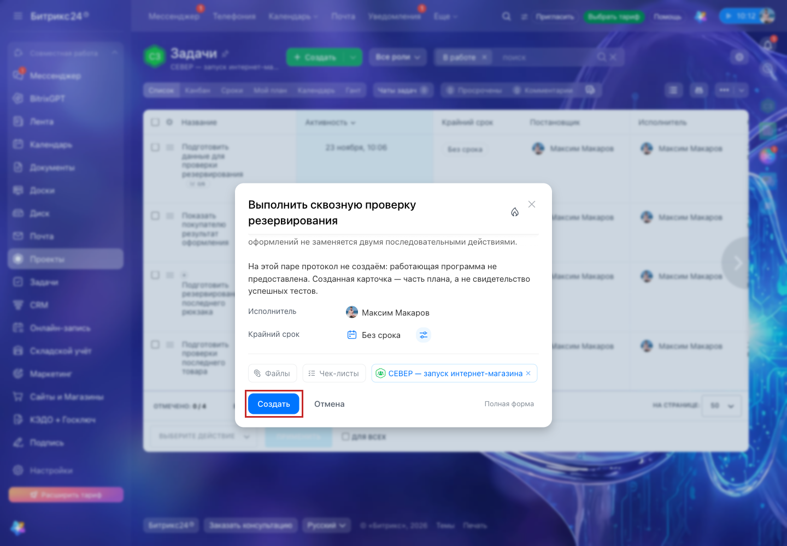
Назначьте каждой карточке одного доступного ответственного. В командном портале распределите результаты между реальными участниками. В собственном портале оставьте себя: приглашать людей ради этой пары не требуется.
У каждой работы появился исполнитель и результат. Проверим, какие результаты нужны для начала других работ.
5. Определите порядок без лишнего ожидания
Зависимость работ означает, что для одной работы нужен результат другой. Общая задача и её подзадачи показывают состав работы; сами по себе они не задают последовательность.
В этом занятии достаточно описать необходимые результаты и добавить ссылки на карточки. Это ручные связи в тексте: они не включают автоматическую блокировку, перенос сроков или линии на диаграмме Ганта.
Не всем работам нужно ждать полной реализации. Подготовку данных можно начать по требованиям и P1–P5. Исполнители интерфейса и обработки резерва сначала согласуют с исполнителем А1 необходимые данные, затем могут работать параллельно. Для сквозного прогона нужны работающие части и тестовая среда.
Разделим два условия: согласование данных для начала разработки и готовность частей для совместной проверки.
Можно начать сразу
Разработка создания резерва
Основание: R1 и R2.
Описание тестовых данных
Основание: готовые P1–P5. Создание самих данных потребует среды.
До реализации А2 и Б — согласование с А1
Данные резерва и ответы
Связь с заказом, время, состояние; успешный ответ и отказ.
Разработка обработки состояний
Разработка отображения ответа
После согласования А1, А2 и Б можно разрабатывать параллельно. Полная готовность А1 для начала А2 и Б не требуется.
Для сквозного прогона — готовые результаты
- Готовая А1
- Готовая А2
- Готовая Б
- Данные В
- Тестовая среда
Если входа нет, указываем, какого результата не хватает. Прогон пока не начинается.
Стрелка означает передачу согласованных сведений. Рамка перед Г объединяет обязательные входы. Это объяснение порядка работ; автоматические зависимости в Битрикс24 не настраиваются.
На втором шаге передаётся описание формата данных. На третьем уже нужны работающие части и подготовленные данные. Поэтому согласование с А1 позволяет начать А2 и Б раньше, чем станет возможен прогон Г.
Сопоставим начало каждой работы с результатами, которые понадобятся для совместной проверки.
| Работа | Когда можно начать | Что потребуется для совместной проверки |
|---|---|---|
| А1 | Сразу по R1/R2 | Работающая операция создания резерва |
| А2 и Б | После согласования данных и ответов А1 | Реализованные части и А1 |
| Описание данных В | Сразу по P1–P5 | Будущая среда для подготовки самих данных |
| Прогон Г | После А1, А2, Б, В и подготовки среды | Все перечисленные результаты |
Для описания данных В не нужен готовый интерфейс. Для прогона Г нужны все перечисленные результаты. Поэтому В можно начать сразу, а Г — после подготовки частей и среды.
Работы можно планировать параллельно, если для их начала не требуется полное завершение друг друга. При одном исполнителе их всё равно придётся распределить по времени. Подробное расписание и загрузка команды выходят за границы этой практики.
Сохраните общий порядок в чате задачи А. Так участники смогут открыть нужную карточку и узнать условия начала работы. Сначала подготовьте текст ниже: замените поля в квадратных скобках своими ссылками и именами.
Порядок работ по резервированию Источник: требования R1–R5 и P1–P5 версии 2 — [ссылка на задачу темы 3]. А1 — создание резерва: [ссылка]. Ответственный: [имя выбранного участника]. А2 — срок, отмена и оплата: [ссылка]. Ответственный: [имя выбранного участника]. Б — интерфейс покупателя: [ссылка]. Ответственный: [имя выбранного участника]. В — данные для проверки: [ссылка]. Ответственный: [имя выбранного участника]. Г — сквозная проверка: [ссылка]. Ответственный: [имя выбранного участника]. Можно начать сразу: А1 и описание данных В. Для В уже есть требования и сценарии; ждать готовой страницы не нужно. До реализации А2 и Б исполнители согласуют с А1 данные резерва и различие успешного ответа и отказа. После этого подготовка этих частей может идти параллельно. Проверка их совместной работы требует готовых частей. Г начинается, когда доступны результаты А1, А2, Б, В и работающая тестовая среда. Если чего-то нет, фиксируем конкретную причину ожидания. Подзадачи А1 и А2 входят в общую задачу. Это группировка, а не указание выполнить А2 строго после полного завершения А1. Все перечисленные работы пока запланированы. Реализация и фактические тесты на занятии не выполнялись.
Сохраните порядок в общей задаче
- Соберите ссылки на карточки.
Ссылка на источник требований у вас уже есть. Откройте по очереди А1, А2, Б, В и Г. Скопируйте ссылку кнопкой с изображением цепочки, как в начале работы с А. Вставьте её в соответствующую строку подготовленного текста. Имена возьмите из поля «Исполнитель» каждой карточки. Старые описания и сообщения оставьте без изменений.
- Откройте чат общей задачи А.
Вернитесь к списку проекта и откройте «Подготовить резервирование последнего рюкзака». Справа находится «Чат задачи». Нажмите поле «Сообщение» внизу чата.
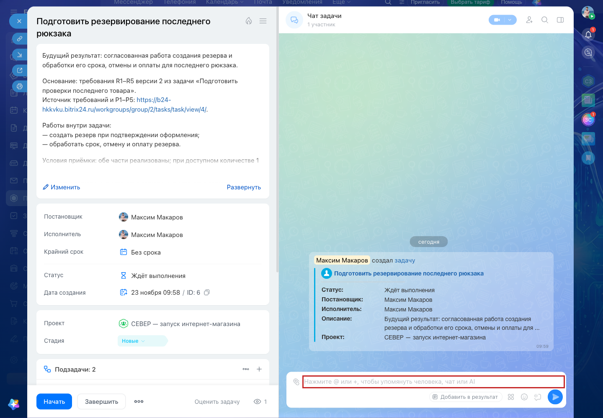
Чат общей задачи - Вставьте и отправьте подготовленный текст.
Вставьте текст со своими ссылками и ответственными в поле «Сообщение». Для проверки длинного текста прокрутите само поле вверх и вниз. Убедитесь, что скобки-заготовки заменены. Затем нажмите синюю кнопку со стрелкой «Отправить сообщение (Enter)» справа внизу. Кнопку «Добавить в результат» оставьте выключенной: реализация магазина ещё предстоит.
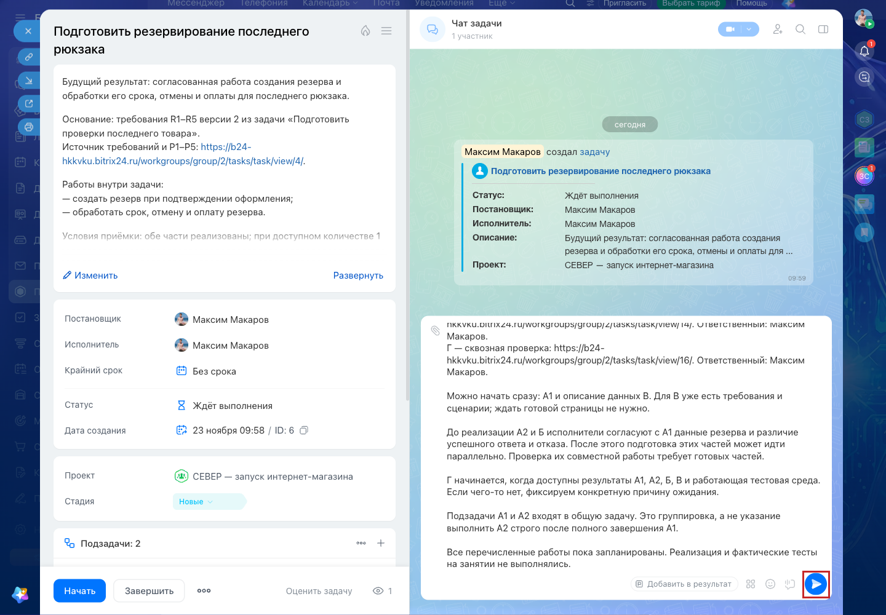
Сообщение с порядком работ - Проверьте сохранение.
Текст должен появиться в ленте чата отдельным сообщением, а поле ввода — очиститься. Нажмите F5. Прокрутите чат до начала своего сообщения и проверьте ссылки и ответственных. Затем прочитайте нижнюю часть: там должны сохраниться условия начала А1, А2, Б, В и Г.
Сохранённый порядок работ 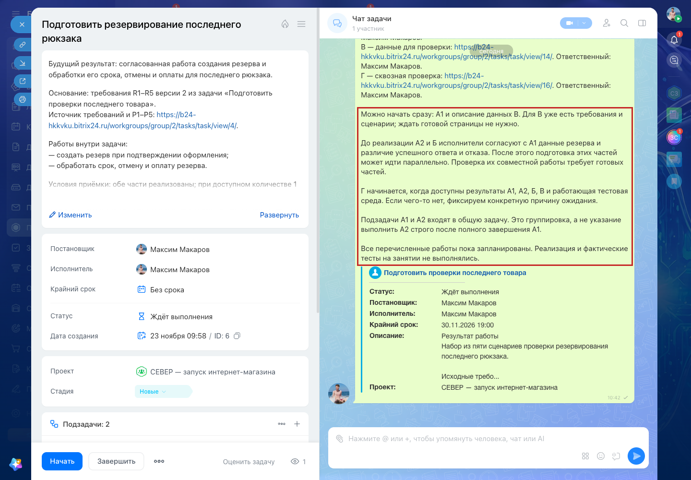
Условия начала работ В ленте сохранился план будущей работы. Статус общей задачи остаётся «Ждёт выполнения». Появление сообщения не означает завершения перечисленных работ.
Порядок сохранён вместе со ссылками и ответственными. Теперь проверим на трёх ситуациях, хватает ли этого плана для выполнения требований.
6. Проверьте план на рабочих ситуациях
Откройте созданные карточки и проведите три случая по плану. На этом шаге проверяем полноту плана. Работающая программа понадобится для будущего прогона.
Прослеживаемость — явная связь требования с работой и проверкой. Покажем её для оплаты до окончания резерва.
Сохранить оплаченный товар
Оплата подтверждена до окончания резерва. Прежний срок не возвращает товар в продажу.
Реализовать правило оплаты
Закрепить товар за оплаченным заказом.
Проверить правило на программе
После оплаты товар остаётся за заказом.
По стрелкам: согласованное поведение → работа по реализации → сценарий будущей проверки. Моменты времени отсчитываются от создания резерва; его срок — 20 минут.
По R5 находим реализацию в А2, а подтверждение поведения — в P5 задачи Г. Если звено отсутствует, дополняем план. Теперь проведите по карточкам три ситуации.
Оплата на 10-й минуте. На 21-й минуте оплаченный рюкзак не должен вернуться в продажу. Найдите работу, которая реализует это правило, её ответственного и работу, которая проверит его на программе. Если в А2 есть только снятие просроченного резерва, добавьте условие о сохранении оплаченного товара.
Отмена на 5-й минуте. Другой покупатель должен получить возможность оформить заказ. Найдите соответствующий пункт А2 и сценарий P4 в основании будущего прогона Г. Одного условия об истечении 20 минут здесь недостаточно.
Второй покупатель. Он пытается оформить уже зарезервированный рюкзак. В А1 найдите отказ в создании второго успешного резерва, в Б — точное сообщение покупателю, в Г — проверку обоих результатов. Красивое сообщение само по себе не защищает товар от двойной продажи.
Проверьте также планирование:
- R1 и R2 учтены в А1; отображение отказа — в Б.
- R3, R4 и R5 учтены в А2.
- В сквозной проверке Г запланированы сценарии по всем пяти требованиям.
- В каждой карточке есть будущий результат и выбранный ответственный.
- А1 и А2 связаны с общей задачей как подзадачи.
- У подготовки описания данных В нет необоснованного ожидания интерфейса Б.
- В Г перечислены конкретные входные результаты: А1, А2, Б и В.
- Поля ссылок и имён заменены вашими данными; старые задачи сохранены.
Исправляйте найденный пропуск в соответствующей новой карточке. Копировать итог «всё проверено» не требуется: покажите исправленное место либо проведите один из случаев по готовому плану.
Обновите страницу клавишей F5. Повторно откройте общую задачу, обе подзадачи и задачу с чек-листом. Убедитесь, что описания, ответственные, связи, сообщение о порядке работ и неотмеченные пункты сохранились.
Результат практики — ссылка на общую задачу с двумя подзадачами и сообщением о порядке работ. В списке проекта также сохранены три самостоятельные задачи. Работы оставьте незавершёнными: заполненные карточки подтверждают наличие плана. Реализация магазина и фактическая проверка программы ещё предстоят.
На итоговых кадрах можно сопоставить состав плана и сохранённую группировку.
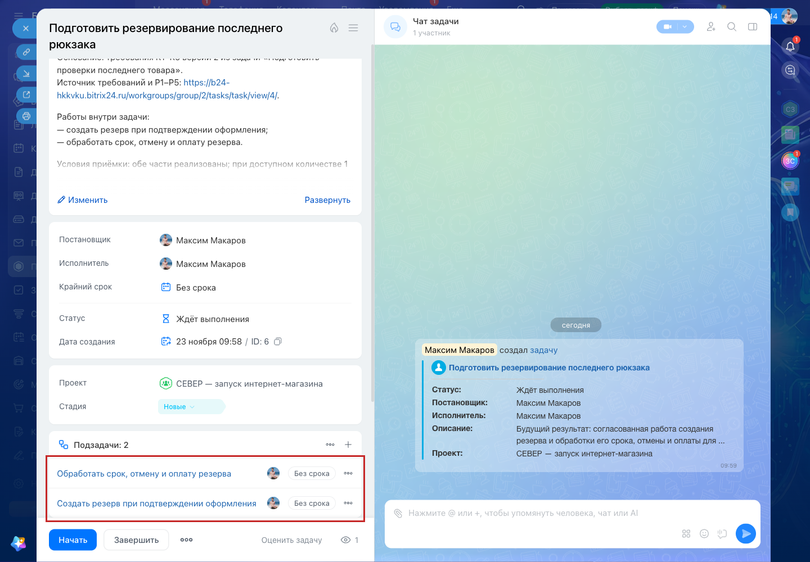
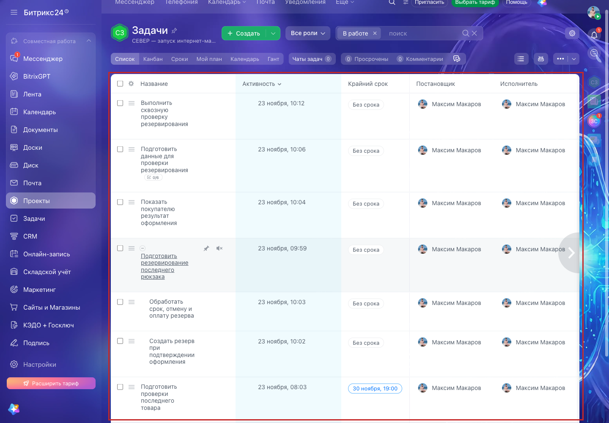
Новые карточки находятся без срока; старую карточку оставляем без изменений. Термины, которые использовали при разборе плана, собраны в словаре.
Короткий словарь
| Термин | Значение | Пример в плане |
|---|---|---|
| Требование | Проверяемое условие поведения продукта. | R3 → неоплаченный резерв действует 20 минут. |
| Задача | Работа с ответственным и ожидаемым результатом. | Требования R1/R2 → А1 → создание резерва. |
| Декомпозиция | Разделение большой работы на самостоятельные проверяемые части. | Общая задача А → создание резерва А1 + обработка состояний А2. |
| Подзадача | Отдельная задача, включённая в более крупную. | А1 входит в А; у А1 есть свой ответственный и результат. |
| Чек-лист | Пункты внутри одной задачи, помогающие собрать её результат. | Задача В → данные + моменты наблюдения + восстановление состояния. |
| Ответственный | Участник, отвечающий за выполнение конкретной задачи. | Карточка А2 → выбранный участник → обработка оплаты и отмены. |
| Критерий приёмки | Наблюдаемое условие для принятия результата. | После оплаты на 10-й минуте товар не освобождается на 21-й. |
| Зависимость | Необходимость получить результат другой работы. | А1 + А2 + Б + В и тестовая среда → прогон Г. |
| Параллельные работы | Работы, которым не обязательно ждать завершения друг друга. | Создание резерва и описание тестовых данных можно начать одновременно. |
| Прослеживаемость | Явная связь требования с работой и проверкой. | R5 → А2 → P5 в будущем прогоне Г. |
| Сценарий проверки | Исходное состояние, действие и ожидаемый результат. | Резерв → оплата → товар остаётся за заказом. |